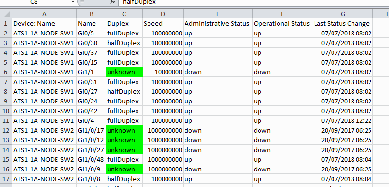
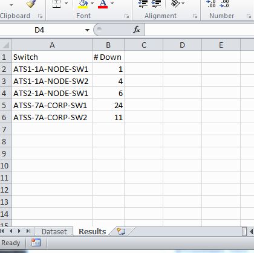

Introduction to Python
Lessons 1-5
Closely following Automate the boring stuff with Python
Lesson 1
Lesson 2
Lesson 3
Lesson 4
Lesson 5
Lesson 3 - Extra topics and more info for the curious!
About us
Kathrin Schuler
Financial Software Developer at Bloomberg
Natalie Keating
Financial Software Developer at Bloomberg
Naomi Christie
News Automation Engineer at Bloomberg
Tucker Vento
System Reliability Engineer at Bloomberg
Introduction to Python
Lesson 1
Closely following Automate the boring stuff with Python
Expressions and the interactive shell
Let's play with repl.it:
expressions consist of values and operators:
>>> 2 + 2
4
There are plenty of operators available:
| Operator | Operation | Example |
|---|---|---|
| + | Addition | 1 + 7 evaluates to 8 |
| - | Subtraction | 80 - 12 evaluates to 68 |
| * | Multiplication | 2 * 3 evaluates to 6 |
| / | Division | 15 / 4 evaluates to 3.75 |
| ** | Exponent | 2 ** 3 evaluates to 8 |
| % | Modulus/Remainder | 22 % 8 evaluates to 6 |
| // | Integer Division/Floored Quotient | 22 // 8 evaluates to 2 |
>>> 2 ** 8
256
>>> (5 - 1) * ((7 + 1) / (3 - 1))
16.0
Errors are okay!
>>> 42 + 5 + * 2
File "python", line 1
42 + 5 + * 2
^
SyntaxError: invalid syntax
Syntax matters
This is a grammatically correct English sentence. This grammatically is sentence not English correct a.
>>> 5 +
File "python", line 1
5 +
^
SyntaxError: invalid syntax
Data Types
A data type is a category for values. Every value is exactly one data type A look at the most common data types:| Data Type | Examples |
|---|---|
| Integer | -2, -1, 0, 1, 2, 3, 4, 5 |
| Floating Point Numbers (Float) | -1.25, 1.0, 17.999, 20.1 |
| Strings | 'a', 'hello world', '20 cars', ' ' |
>>> 'Hello world!
SyntaxError: EOL while scanning string literal
The behaviour of operator changes depending on the data types:
>>> 'Alice' + 'Bob'
'AliceBob'
string concatenation
>>> 'Alice' + 42
Traceback (most recent call last):
File "python", line 1
'Alice' + 42
TypeError: Can't convert 'int' object to str implicitly
>>> 'Alice' * 5
'AliceAliceAliceAliceAlice'
Variables
Avariableis like a box in the computer's memory where you can store a single value. If you save a value into a variable you can reuse it later on
>>> spam = 42
>>> spam
42

Try it out:
When a variable is created we call thatinitialized:
>>> spam = 40
>>> spam
40
>>> eggs = 2
>>> spam + eggs
42
>>> spam + eggs + spam
82
overwriting the variable:
>>> spam = spam + 2
>>> spam
42
>>> spam = 'Hello'
>>> spam
'Hello'
>>> spam = 'Goodbye'
>>> spam
'Goodbye'
Just like before, the spam variable stores "Hello" until we replace it with "Goodbye":

Naming Variables
- Only use one word (no spaces, hyphens)
- Use letters, numbers and underscores
- variables can not begin with a number
- Names are case sensitive
>>> password_to_pc = 'top secret' # valid
>>> _password = 'test' # valid
>>> myPassword = 'my pets name' # valid
>>> 4password # cannot start with a number
>>> password-to-pc # cannot use hyphens
>>> password to pc # no spaces
Good Names?
A good variable name describes the data it contains. Imagine that you moved to a new house and labeled all of your moving boxes as Stuff. You’d never find anything!Conventions
>>> bank_account_nr = 12345 # snake case
>>> bankAccountNr = 12345 # camel case
Pick one and stick with it
(Python convention is snake case)Your First Program
The interactive shell is good for trying things out but we wan't to write entire programs. In a program you can type multiple instructions before executing them.
# This program says hello and asks for my name.
print('Hello world!')
print('What is your name?') # ask for their name
myName = input() # raw_input if you're in python2
print('It is good to meet you, ' + myName)
print('The length of your name is:')
print(len(myName))
print('What is your age?') # ask for their age
myAge = input()
print('You will be ' + str(int(myAge) + 1) + ' in a year.')
Comments
# This program says hello and asks for my name.
The print() function
print('Hello world!')
print('What is your name?') # ask for their name
print() function prints everything inside the parenthesis on the screen.
We say that python is callingthe
print() function with a string
value passed to the function. A value passed to a function is called an
argument
The parenthesis are important. They mean we are calling a function. Just
print
would refer to a variable.
The input() function
myName = input()
myName
as a string
Printing variables
print('It is good to meet you, ' + myName)
myName then this expression would print
"It is good to meet you, Kathrin"
The len() function
print('The length of your name is:')
print(len(myName))
len() functions evaluates the length of a string. Try it out:
>>> len('hello')
5
>>> len('I really like learning Python')
29
>>> len('')
0
len() function is then passed to the print() function.
The print() function can take integers and string values but try mixing the two:
>>> print('I am ' + 29 + ' years old.')
Traceback (most recent call last):
File "python", line 1
print('I am ' + 29 + ' years old.')
TypeError: Can't convert 'int' object to str implicitly
The str(), int() and float() functions
If you want to concatenate an integer (like 29) with a string you need to convert 29 to '29'
>>> str(29)
'29'
>>> print('I am ' + str(29) + ' years old.')
>>> int('-99')
-99
>>> int(1.25)
1
>>> int(1.99)
1
>>> float('3.14')
3.14
>>> float(10)
10.0
print('What is your age?') # ask for their age
myAge = input()
print('You will be ' + str(int(myAge) + 1) + ' in a year.')
int(myAge) + 1
str(int(myAge) + 1)
Text and Number Equivalence
You can check equivalence using == in Python:
>>> 42 == 37
False
>>> 42 == '42'
False
>>> 42 == 42.0
True
>>> 42.0 == 0042.000
True
Booleans
Unlike the other datatypes, the Boolean data type has only two values:
True and False (Fun fact: True/False is capitalized because the data type is named after mathematician George Boole)
>>> my_first_bool = True
Python will give you an error message if:
- You don’t use the proper case (e.g. true instead of True)
- You try to use True and False for variable names
>>> spam = True
>>> spam
>>> True
Some more questions to try in your terminal:
true with a lower case t?
>>> true
True or
False as the name of a variable?
>>> True = 2 + 2
False == False? Why?
>>> False == False
comparison operatorsand we'll cover that next!
Comparison Operators
We use these to compare two values and return a True or False statement| Operator | Meaning |
|---|---|
| == | Equal to |
| != | Not equal to |
| < | Less than |
| > | More than |
| <= | Less than or equal to |
| >= | More than or equal to |
Beware
==
is not the same as:
=
Time for some practice!
Type the following into your terminal and see what they return:
>>> 42 == 42
>>> 42 == 99
>>> 2 != 3
>>> 2 != 2
>>> 'hello' == 'hello'
>>> 'hello' == 'Hello'
>>> 'dog' != 'cat'
>>> True != False
>>> 42 == 42.0
>>> 42 == '42'
Time for some practice!
Type the following into your terminal and see what they return:
>>> 42 < 100
>>> 42 > 100
>>> 42 < 42
>>> my_number = 42
>>> my_number <= 42
>>> my_age = 29
>>> my_age >= 10
Boolean Operators
Comparing booleans!
and
or
not
Only 3 things to remember, easy!
The and operator
Evaluates to True if both booleans are True
>>> (5 > 2) and (5 < 10)
>>> True
>>> (5 == 2) and (5 < 10)
>>> False
>>> age = 27
>>> (age > 20) and (age < 30)
>>> True
The or operator
Evaluates to True if either of the booleans are True
>>> (27 > 20) or (5 < 1)
>>> True
>>> (5 == 2) or (5 < 1)
>>> False
>>> wifi_connection = True
>>> mobile_connection = False
>>> wifi_connection or mobile_connection
>>> True
The not operator
Unlike and and or the not
operator only takes one Boolean
Evaluates to the opposite of the Boolean value
>>> not True
>>> False
>>> not not False
>>> False
>>> in_debt = True # owes money to someone
>>> not in_debt
>>> False # can not get a credit card
Time for some practice!
Type the following into your terminal and see what they return:
>>> (4 < 5) and (5 < 6)
>>> (4 < 5) and (9 < 6)
>>> (1 == 2) or (2 == 2)
>>> 2 + 2 == 4 and not 2 + 2 == 5 and 2 * 2 == 2 + 2
Practice Questions
Which of the following are operators and which are values?
*
'hello'
-88.8
-
/
+
5
Which of the following is a variable and which is a string?
'spam'
spam
What does bacon hold after the following code? And what is printed on the screen?
>>> bacon = 20
>>> bacon + 1
Why does the following return an error?
print('I have eaten' + 99 + 'burritos')
What are the two values of the Boolean data type? How do you write them?
What do the following expressions evaluate to?
(5 > 4) and (3 == 5)
not (5 > 4)
(5 > 4) or (3 == 5)
not ((5 > 4) or (3 == 5))
(True and True) and (True == False)
(not False) or (not True)
Thank you!!
Introduction to Python
Lesson 2
Closely following Automate the boring stuff with Python
Warmup Exercise
Lesson 1 RecapFlow Control

Flow control.
Flow Control Statements
A bit of vocabulary
Conditions
Conditions always evaluate down to a Boolean value,True or False.
A flow control statement decides what to do based on whether its condition is True or False.
Blocks of Code
Lines of Python code can be grouped together inBlocks. You can tell when a block begins and Ends by indentation.
If statements
“If this condition is true, execute the code in the clause.”
if name == 'Alice':
print('Hi, Alice')
- The
ifkeyword - A condition
- A colon
- An indented Block (the
if clause
)
if name == 'Alice':
print('Hi, Alice')

Else statements
“If this condition is true, execute the code in the clause. Else, execute the code in the else-block"
if name == 'Alice':
print('Hi, Alice')
else:
print('Hello, stranger')
- The
elsekeyword - A colon
- An indented Block (the
else clause
)
if name == 'Alice':
print('Hi, Alice')
else:
print('Hello, stranger')

elif statements
“If this condition is true, execute the code in the clause. Else if this condition is true, execute the code in this clause”
if name == 'Alice':
print('Hi, Alice')
elif age < 12:
print('You are not Alice, kiddo')
- The
elifkeyword - A condition
- A colon
- An indented Block (the
elif clause
)
if name == 'Alice':
print('Hi, Alice')
elif age < 12:
print('You are not Alice, kiddo')

if name == 'Alice':
print('Hi, Alice.')
elif age < 12:
print('You are not Alice, kiddo.')
elif age > 2000:
print('Unlike you, Alice is not an undead, immortal vampire.')
elif age > 100:
print('You are not Alice, grannie.')
if name == 'Alice':
print('Hi, Alice.')
elif age < 12:
print('You are not Alice, kiddo.')
elif age > 100:
print('You are not Alice, grannie.')
elif age > 2000:
print('Unlike you, Alice is not an undead, immortal vampire.')
Putting it all together:
if name == 'Alice':
print('Hi, Alice.')
elif age < 12:
print('You are not Alice, kiddo.')
elif age > 100:
print('You are not Alice, grannie.')
elif age > 2000:
print('Unlike you, Alice is not an undead, immortal vampire.')
else:
print('I dont know who you are, but certainly not Alice')
Time for some practice!
Can you write a small program that asks a user if he/she has wifi and/or a mobile connection and then tells them if they can access the internet? Wifi should always be the preference if available. The expected output should look something like:
>>> "Do you have wifi?" yes
>>> "Do you have mobile data?" yes
>>> "You can access the internet through wifi"
>>> "Do you have wifi?" yes
>>> "Do you have mobile data?" no
>>> "You can access the internet through wifi"
>>> "Do you have wifi?" no
>>> "Do you have mobile data?" yes
>>> "You can access the internet through mobile data"
>>> "Do you have wifi?" no
>>> "Do you have mobile data?" no
>>> "I am sorry, you cannot access the internet"
While loop statements

spam = 0
while spam < 5:
print('Hello, world.')
spam = spam + 1
- The
whilekeyword - A condition
- A colon
- An indented Block (the
while clause
)
An annoying while loop
name = ''
while name != 'your name':
print('Please type your name.')
name = input()
print('Thank you!')
break statements
There is a shortcut to getting the program execution to break out of a while loop’s clause early. If the execution reaches a break statement, it immediately exits the while loop
while True:
print('Please type your name.')
name = input()
if name == 'your name':
break
print('Thank you!')
continue statements
Like break statements, continue statements are used inside of loops. Unlike break statements, they cause the program execution to jump back to the start of the loop (and re-evaluate the condition).
num = 0
while num < 10:
num = num + 1
if num % 2 == 0:
# number is even
continue
print(num)
For loops
While loops execute the same code until a condition is met, but what if we want to run some code a set number of times?
i = 0
while i < 5:
print(i)
i = i + 1
for i in range(5):
print(i)
- The
forkeyword - A variable name
- The
inkeyword - A sequence of items that we loop though, in this case
range() - A colon
- An indented block of code that we execute for each in item we are looping over
range() function
range(start, stop, step)
range(0,5)range(3,10)range(10,20,2)
Time for practice
- Can you write code that counts down from 5?
- Can you write code that asks the user for their name and says "Hello, [name]" five times?
Practice Questions
Write code that stores input in a variable called spam, prints "Hello" if 1 is stored in spam, prints "Howdy" if 2 is stored in spam, and prints "Greetings!" if anything other int is stored in spam.
Look up what continue statements do. Can you understand the following code?
while True:
print('Who are you?')
name = input()
if name != 'Joe':
continue
print('Hello, Joe.')
while True:
print('What is the password? (It is a fish.)')
password = input()
if password == 'swordfish':
break
print('WRONG!')
print('Access granted.')
Can you write code that sums up all the numbers from 1 to 10?
Hint: you should use a for loop and you need "somewhere" to store your sum.Can you write code that prints all the values from 1 to 50 and skips 27?
Introduction to Python
Lesson 3
Closely following Automate the boring stuff with Python
Warmup Exercise
Lesson 2 RecapLesson 3 Warmup: Fix the errors
Lesson 3 Warmup: Loops Recap
Functions
You already knowprint(), input() and len().
These are all built in functions but you can also write your own. Functions are just a named container for a block of code.
def hello():
print('Howdy!')
print('Howdy!!!')
print('Hello there.')
return
hello()
hello()
hello()
Let's have a closer look:
Function definition:
def hello():
print('Howdy!')
print('Howdy!!!')
print('Hello there.')
return
def defines a function called hello.
The bodyis executed when we call this function, not when we define it.
Function call:
hello()
hello()
hello()
Why do we need functions?
print('Howdy!')
print('Howdy!!!')
print('Hello there.')
print('Howdy!')
print('Howdy!!!')
print('Hello there.')
print('Howdy!')
print('Howdy!!!')
print('Hello there.')
Why do we need functions?
Functions are abstractions (as explained here)If you just want to use a function in your program, you don't have to know how it works inside! It's sort of like driving a car. With an automobile, you don't need to understand every detail about the engine and drive train and wheels, if all you want to do is drive the car. The only time you need to know how a function works inside is when you need to write the function, or change how it works. (It's like a car again; you need to know how a car works in order to build one or fix one.) But once a function is written and working, you never need to look at its insides again.
Functions with parameters
When we calledprint() we passed in values, so called arguments. Can we pass an argument to our function hello?
# Function definitions
def hello(name):
print('Hello ' + name)
return
# Code starts here
hello('Alice')
hello('Bob')
>>> hello()
>>> File "python", line 5
TypeError: hello() missing 1 required positional argument: 'name'
# Function definitions
def hello(name, age):
print('Hello ' + name)
print('You are ' + str(age) + ' years old')
return
# Code starts here
hello('Alice', 17)
hello('Bob', 45)
# Function definitions
def hello(name, age):
print('Hello ' + name)
print('You are ' + str(age) + ' years old')
return
# Code starts here
user_name = input("What's your name?")
user_age = int(input("What's your age?"))
hello(user_name, user_age)
hello('Bob', 45)
Time for some practice
Can you write a function calledprint_sum(number1, number2) that takes two numbers as arguments and prints out the sum?
Can you call it with different arguments to test it?
def print_sum(number1, number2):
# Your code goes here
print_sum(3, 7)
>>> "The sum of 3 and 7 is 10!"
Time for some practice
Can you write a function calledcount that takes a number as an argument and then counts up to this number?
Can you call it with different arguments to test it?
def count(number):
# Your code goes here
count(3)
>>> 1
>>> 2
>>> 3
>>> GO!
Return values
When we call thelen() function with 'Hello' it will evaluate to the value 5.
We call this a return value. A function can do something and then either leave it at and return nothing to the user or it can return something.
# Function definition
def getAnswer(number):
if number == 1:
return 'It is certain'
elif number == 2:
return 'It is decidedly so'
else:
return 'I dont know the answer to this'
# Code starts here
fortune = getAnswer(5)
print(fortune)
fortune = getAnswer(3)
print(fortune)
print(getAnswer(3))
print('Tell me a number: ')
number = int(input())
fortune = getAnswer(number)
print(fortune)
Time for practice!
Can you write a function called get_max that takes two numbers and returns the bigger one? Your code would look something like this:
# Function definitions:
def get_max(number1, number2):
# Your code goes here..
# Code execution starts here
maximum = get_max(3,7)
print(maximum) # This should print 7
Another review exercise is here!
Importing from Modules
A lot of functions already exist and we can just reuse them. A lot of those are also built in:
import random
random_number = random.randint(1, 10)
module.
from random import randint
random_number = randint(1, 10)
Another example:
The datetime module The datetime module has different parts inside: date, time, datetime, ... The double naming of datetime can be confusing.
import datetime
print(datetime.datetime.today())
from datetime import datetime
print(datetime.today())
Time for practice!
Have a look at the math module (especially the Constants). You don't only have functions in modules. You can also have general variables. Can you print out pi using the math module?If you look at the Trigonometric Functions section of the documentation, how would you calculate sin(0.9) using the math module?
Time for practice!
Can you write a function called 'get_birth_year' that takes someone's age as an input and returns the year the person was born? Your code would look something like this:
# Your import statements go here:
# Function definitions:
def get_birth_year(age):
# Your code goes here. Do some magic and return birth year:
# Code execution starts here
age = # Ask the user for his age
birth_year = # Call your function with age
print('You were born in ' + str(birth_year))
A short program
Guess the number
Let's see how we can put everything we have learnt so far together! The output of our program will look something like this:
I am thinking of a number between 1 and 20.
Take a guess.
10
Your guess is too low.
Take a guess.
15
Your guess is too low.
Take a guess.
17
Your guess is too high.
Take a guess.
16
Good job! You guessed my number in 4 guesses!
import random
# The computer generates a random number
secret_number = random.randint(1,20)
print('I am thinking of a number between 1 and 20')
# Ask the player to guess maximum 6 times.
total_guesses_taken = 0
while total_guesses_taken < 6:
total_guesses_taken = total_guesses_taken + 1
print('Take a guess.')
guess = int(input())
if guess < secret_number:
print('Your guess is too low.')
elif guess > secret_number:
print('Your guess is too high.')
else:
break # This is the correct guess, we can exit the while loop now
if guess == secret_number:
print('Good job! You guessed my number in ' + str(total_guesses_taken) + ' guesses!')
else:
print('Nope. The number I was thinking of was ' + str(secret_number))
Practice Questions
What is the difference between a function and a function call?
bacon() in a module named spam, how would you call it after import spam?
Practice Project
The Collatz Sequence
Step1: Write a function namedcollatz() that has one parameter named number. If number is even, then collatz() should print number // 2 and return this value. If number is odd, then collatz() should print and return 3 * number + 1.
def collatz(number):
# Your code
collatz() on that number until the function returns the value 1.
(Amazingly enough, this sequence actually works for any integer—sooner or later, using this sequence, you’ll arrive at 1! Even mathematicians aren’t sure why.)
Things to remember: - Remember to convert the value from input() to an int, otherwise it will be a string value - You can check if a number is even using
number % 2 == 0 (If number % 2 == 1 the number is odd).
Maybe you can adapt the following code to help you?
if number % 2 == 0:
print("This number is even")
else:
print("This number is odd")
Enter number: 3
10
5
16
8
4
2
1
Thank you!!
Introduction to Python
Extra Info for the curious
Closely following Automate the boring stuff with Python
The None value
In Python there is a value calledNone which means no value/absent value.
Just like True and False this must be capitalized: None
return None to the end of every function where nothing else is specified.
return without a value will also mean None
def hello():
print("test")
def hello():
print("test")
return None
def hello():
print("test")
return
Keyword arguments
Most arguments have a position in the function call. The first argument will be the first named parameter, etc. But the print function can take as many arguments as you give it.print("test", "bla", "something else", "etc")
print('Hello')
print('World')
>>> Hello
>>> World
print('Hello', end='')
print('World')
>>> HelloWorld
end is called a keyword argument because you have to call it by it's name
print('cats', 'dogs', 'mice')
>>> cats dogs mice
sep argument of the print function:
print('cats', 'dogs', 'mice', sep=',')
>>> cats,dogs,mice
Time for some practice
Can get the following line on the screen? how?
>>> shirts|trousers|blouses|shoes
>>> 1|2|3|4|5
Local and Global Scope
Parameters and variables that are assigned in a function are said to exist in that function’slocal scope. Variables that are assigned outside all functions are said to exist in the
global scope.
Scope is like a container. When a scope is destrozed, all the variables in it are forgotten.
The global scope lasts from your when your program begins until it ends.
# Function Definitions
def spam():
eggs = 31337
# Execution starts here
spam()
print(eggs)
Traceback (most recent call last):
File "C:/test3784.py", line 4
print(eggs)
NameError: name 'eggs' is not defined
# Function Definitions
def spam():
print(eggs)
# Execution starts here
eggs = 42
spam()
>>> 42
# Function Definitions
def spam():
eggs = 19
print(eggs)
# Execution starts here
eggs = 42
spam()
To read more about scope, please refer to the section in the book where it is explained further!
Introduction to Python
Lesson 4
Closely following Automate the boring stuff with Python
Warmup Exercise
Lesson 3 RecapLists
Lists can contain multiple values, which makes it easier to write programs that handle large amounts of data. Lists can even contain other lists
>>> [1, 2, 5]
[1, 2, 5]
>>> spam = ['cat', 'bat', 'rat', 'elephant']
>>> spam
['cat', 'bat', 'rat', 'elephant']
List Indexes
You can access the elements in a list with indexes:
>>> spam = ['cat', 'bat', 'rat', 'elephant']
>>> spam[0]
'cat'
>>> spam[1]
'bat'
>>> spam[2]
'rat'
>>> ['cat', 'bat', 'rat', 'elephant'][3]
'elephant'
IndexError if you use an index that exceeds the number of values in your list:
>>> spam = ['cat', 'bat', 'rat', 'elephant']
>>> spam[10000]
Traceback (most recent call last):
File "python", line 1
spam[10000]
IndexError: list index out of range
>>> spam = ['cat', 'bat', 'rat', 'elephant']
>>> spam[1.0]
Traceback (most recent call last):
File "python", line 1
spam[1.0]
TypeError: list indices must be integers, not float
Python lists can contain other lists
>>> spam = [['cat', 'bat'], [10, 20, 30, 40, 50]]
>>> spam[0]
['cat', 'bat']
>>> spam[0][1]
'bat'
>>> spam[1][4]
50
Negative Indexes
While indexes start at 0 and go up, you can also use negative integers for the index. The integer value -1 refers to the last index in a list, the value -2 refers to the second-to-last index in a list, and so on.
>>> spam = ['cat', 'bat', 'rat', 'elephant']
>>> spam[-1]
'elephant'
>>> spam[-3]
'bat'
>>> 'The ' + spam[-1] + ' is afraid of the ' + spam[-3] + '.'
'The elephant is afraid of the bat.'
Slices
Just as an index can get a single value from a list, a slice can get several values from a list, in the form of a new list.
>>> spam = ['cat', 'bat', 'rat', 'elephant']
>>> spam[0:4]
['cat', 'bat', 'rat', 'elephant']
>>> spam[1:3]
['bat', 'rat']
>>> spam[0:-1]
['cat', 'bat', 'rat']
>>> spam[:2] # Beginning to index 2
['cat', 'bat']
>>> spam[1:] # Index 1 to end
['bat', 'rat', 'elephant']
>>> spam[:] # everything
['cat', 'bat', 'rat', 'elephant']
Lists support len() too
The len() function will return the number of values that are in a list value passed to it, just like it can count the number of characters in a string value.
>>> spam = ['cat', 'dog', 'moose']
>>> len(spam)
3
Time for Practice!
hereChanging Lists
Changing Values in a List
Normally you assign variables likespam = 42. But you can assign an index in a list:
>>> spam = ['cat', 'bat', 'rat', 'elephant']
>>> spam[1] = 'aardvark'
>>> spam
['cat', 'aardvark', 'rat', 'elephant']
>>> spam[2] = spam[1]
>>> spam
['cat', 'aardvark', 'aardvark', 'elephant']
>>> spam[-1] = 12345
>>> spam
['cat', 'aardvark', 'aardvark', 12345]
Appending to a list
You can add just one element to a list usingappend
>>> spam = ['cat', 'bat', 'rat', 'elephant']
>>> spam.append('dog')
List Concatenation
The + operator can combine two lists to create a new list value in the same way it combines two strings into a new string value. The * operator can also be used with a list and an integer value to replicate the list.
>>> [1, 2, 3] + ['A', 'B', 'C']
[1, 2, 3, 'A', 'B', 'C']
>>> ['X', 'Y', 'Z'] * 3
['X', 'Y', 'Z', 'X', 'Y', 'Z', 'X', 'Y', 'Z']
>>> spam = [1, 2, 3]
>>> spam = spam + ['A', 'B', 'C']
>>> spam
[1, 2, 3, 'A', 'B', 'C']
Removing Values from Lists
The del statement will delete values at an index in a list. All of the values in the list after the deleted value will be moved up one index.
>>> spam = ['cat', 'bat', 'rat', 'elephant']
>>> del spam[2]
>>> spam
['cat', 'bat', 'elephant']
>>> del spam[2]
>>> spam
['cat', 'bat']
>>> spam = ['cat', 'bat', 'rat', 'elephant']
>>> spam.remove('cat')
Time for some practice!
hereTime for some practice!
spam = [2, 4, 6, 8, 10]Working with lists
When you first begin writing programs, it’s tempting to create many individual variables to store a group of similar values. For example, if I wanted to store the names of my cats, I might be tempted to write code like this:
catName1 = 'Zophie'
catName2 = 'Pooka'
catName3 = 'Simon'
catName4 = 'Lady Macbeth'
catName5 = 'Fat-tail'
catName6 = 'Miss Cleo'
print('Enter the name of cat 1:')
catName1 = input()
print('Enter the name of cat 2:')
catName2 = input()
print('Enter the name of cat 3:')
catName3 = input()
print('Enter the name of cat 4:')
catName4 = input()
print('Enter the name of cat 5:')
catName5 = input()
print('The cat names are:')
print(catName1 + ' ' + catName2 + ' ' + catName3 + ' ' + catName4 + ' ' +
catName5)
catNames = []
while True:
print('Enter the name of cat ' + str(len(catNames) + 1) +
' (Or enter nothing to stop.):')
name = input()
if name == '':
break
catNames = catNames + [name] # list concatenation
print('The cat names are:')
for name in catNames:
print(' ' + name)
For loops with lists
In Lesson 2 you learned about loops:
for i in range(4):
print(i)
range returns a list-like value
>>> supplies = ['pens', 'staplers', 'flame-throwers', 'binders']
>>> for supply in supplies
print('The supply is: ' + supply)
The supply is: pens
The supply is: staplers
The supply is: flame-throwers
The supply is: binders
Time for practice!
Can you write some code that sums up all the values in a list?
numbers = [1, 3, 5, 10, 6]
# Your code goes here
print(sum) # This should print 25
Check if a value exists
You can find out whether a value is or isn't in a list with thein
and not in expressions.
>>> 'howdy' in ['hello', 'hi', 'howdy', 'heyas']
True
>>> spam = ['hello', 'hi', 'howdy', 'heyas']
>>> 'cat' in spam
False
>>> 'howdy' not in spam
False
>>> 'cat' not in spam
True
myPets = ['Zophie', 'Pooka', 'Fat-tail']
print('Enter a pet name:')
name = input()
if name not in myPets:
print('I do not have a pet named ' + name)
else:
print(name + ' is my pet.')
Enter a pet name:
Footfoot
I do not have a pet named Footfoot
Sample Program
Remember the fortune teller program from earlier? We can simplify that by using a list:
import random
messages = ['It is certain',
'It is decidedly so',
'Yes definitely',
'Reply hazy try again',
'Ask again later',
'Concentrate and ask again',
'My reply is no',
'Outlook not so good',
'Very doubtful']
random_index = random.randint(0, len(messages) - 1)
print(messages[random_index])
Dictionaries
Dictionaries are like lists - a collection of many values, but the index can be of any type, not just an integer.
>>> cat = {'size': 'fat', 'color': 'gray', 'disposition': 'loud'}
>>> cat['size']
'fat'
>>> 'Cat has a ' + cat['disposition'] + ' disposition'
'Cat has a loud disposition'
For dictionaries, indexes are known are keys. Each element is a key-value pair.
Dictionaries vs. Lists
Dictionaries are not like lists in that the order of the dictionaries don't matter
>>> cat = {'size': 'fat', 'color': 'gray', 'disposition': 'loud'}
>>> tab = {'disposition': 'loud', 'size': 'fat', 'color': 'gray'}
>>> cat == tab
True
Since there's no ordering, slicing a dictionary doesn't make sense.
KeyError if a key does not exist in your dictionary:
>>> cat = {'size': 'fat', 'color': 'gray', 'disposition': 'loud'}
>>> cat['age']
Traceback (most recent call last):
File "python", line 1
KeyError: 'age'
Organising data with dictionaries
Dictionaries let you organise data in a more intuitive way.Maybe you want to describe information about a specific equity:
- Ticker
- Price
- Tradable
- Exchange
Organising data with dictionaries
>>> equity = {
'ticker': 'AAPL',
'price': 104.6,
'tradeable': True,
'exchange': 'US'
}
>>> equity['ticker']
'AAPL'
Organising data with dictionaries
Or maybe you want to keep the ages of everyone in the room
>>> ages = {'Tom': 23, 'Gabriel': 27, 'Kathrin': 25}
>>> ages['Tom']
23
>>> ages['Kathrin']
25
Working with dictionaries
We've just seen how to read from a dictionary, but how do we modify one?
>>> ages = {'Tom': 23, 'Gabriel': 27, 'Kathrin': 25}
>>> ages['Tom']
23
>>> ages['Tom'] = ages['Tom'] + 1
>>> ages['Tom']
24
>>> ages = {'Tom': 23, 'Gabriel': 27, 'Kathrin': 25}
>>> ages['Naomi']
Traceback (most recent call last):
File "python", line 1
KeyError: 'Naomi'
>>> ages['Naomi'] = 26
>>> ages
{'Tom': 23, 'Gabriel': 27, 'Kathrin': 25, 'Naomi': 26}
>>> ages = {'Tom': 23, 'Gabriel': 27, 'Kathrin': 25}
>>> del ages['Kathrin']
>>> ages
{'Tom': 23, 'Gabriel': 27}
Check if a key exists
Now we want to check if we've recorded someone's age
>>> ages = {'Tom': 23, 'Gabriel': 27, 'Kathrin': 25}
>>> 'Naomi' in ages
False
>>> 'Kathrin' in ages
True
if and else to do some interesting things
if 'Gabriel' in ages:
print('Gabriel is ' + str(ages['Gabriel']) + ' years old')
else:
print("We do not have Gabriel's age")
Time for some practice!
hereFor loops with dictionaries
Dictionaries provide three functions which return lists of things you can use in a for loop
>>> ages = {'Tom': 23, 'Gabriel': 27, 'Kathrin': 25}
>>> for age in ages.values():
... print(age)
23
27
25
>>> ages = {'Tom': 23, 'Gabriel': 27, 'Kathrin': 25}
>>> for name in ages.keys():
... print(name)
Tom
Gabriel
Kathrin
>>> ages = {'Tom': 23, 'Gabriel': 27, 'Kathrin': 25}
>>> for item in ages.items():
... print(item)
... print(item[0] + ' -> ' + str(item[1]))
('Tom', 23)
'Tom -> 23'
('Gabriel', 27)
'Gabriel -> 27'
('Kathrin', 25)
'Kathrin -> 25'
items() will give you the key-value pairs
Practice Questions
What is [ ]?
For the following 3 question assume:
spam = ['a', 'b', 'c', 'd']spam[int(int('3' * 2) // 11)] evaluate to?2. What does
spam[-1] evaluate to?
3. What does
spam[:2] evaluate to?
How can you delete an element from a list?
Read about methods on Lists: append(), remove() and index()
Assume:
bacon = [3.14, 'cat', 11, 'cat', True]bacon.index('cat') evaluate to?2. What does
bacon.remove('cat') do? What does bacon look like now?
3. What does
bacon.append(99) do? What does bacon look like now?
Can you write a function that gets the largest number from a list?
What does the code for an empty dictionary look like?
Can you write a dictionary with a key 'foo' and value 42?
What happens if you try to access spam['foo'] if spam = {'bar': 100}?
What's the difference between the following codes? Assume spam is a dictionary
- between the expressions
'cat' in spamand'cat' in spam.keys()? - between the expressions
'cat' in spamand'cat' in spam.values()?
Practice Project - Lists
Comma Code
Say you have a list value like this:spam = ['apples', 'bananas', 'tofu', 'cats']Practice Project - Dictionaries
Fantasy Game Inventory
You are creating a fantasy video game. The data structure to model the player’s inventory will be a dictionary where the keys are string values describing the item in the inventory and the value is an integer value detailing how many of that item the player has. For example, the dictionary value{'rope': 1, 'torch': 6, 'gold coin': 42, 'dagger': 1, 'arrow': 12} means the player has 1 rope, 6 torches, 42 gold coins, and so on.
Write a function named
displayInventory() that would take any possible “inventory” (dictionary) and display it like the following:
Inventory:
12 arrow
42 gold coin
1 rope
6 torch
1 dagger
Total number of items: 63
Fantasy Game Inventory
Imagine a treasure represented as a list of strings like this:
treasure = ['gold coin', 'dagger', 'gold coin', 'gold coin', 'ruby']
addToInventory(inventory, addedItems), where the inventory parameter is a dictionary
representing the player’s inventory (like in the previous project) and the addedItems parameter is a list like treasure.
The addToInventory() function should return a dictionary that represents the updated inventory.
Note that the addedItems list can contain multiples of the same item. Your code could look something like this:
#Function definitions
def displayInventory(inventory):
# Code you wrote before
def addToInventory(inventory, addedItems):
# your code goes here
# Code execution starts here
inv = {'gold coin': 42, 'rope': 1}
treasure = ['gold coin', 'dagger', 'gold coin', 'gold coin', 'ruby']
inv = addToInventory(inv, treasure)
displayInventory(inv)
Inventory:
45 gold coin
1 rope
1 ruby
1 dagger
Total number of items: 48
Thank you!!
Introduction to Python
Lesson 5
Closely following Automate the boring stuff with Python
Setting up Jupyter Notebook
Set up: First steps
- Download and install Anaconda
- Create a Folder structure, for the exercises we are going to use Documents->Jupyter->NameOfProject
- Move the relevant files excel files into the folder of your project, for the first example this will be example.xlsx
- Start Jupyter Notebook, navigate to your folder, create a new Jupyter Notebook and save it.
- You are ready to go!
Jupyter Notebook Basics
- Notebook documents (or “notebooks”, all lower case) are documents which contain both computer code (e.g. python) and rich text elements (paragraph, equations, figures, links, etc…).
- To run a cell, Use Shift + Enter. This way you can run the notebook step by step
- You can run the whole notebook in a single step by clicking on the menu Cell -> Run All.
- To restart the kernel (i.e. the computational engine), click on the menu Kernel -> Restart. This can be useful to start over a computation from scratch (e.g. variables are deleted, open files are closed, etc…).
Working with Excel
A bit of vocabulary
- An Excel spreadsheet document is called a workbook. A single workbook is saved in a file with the .xlsx extension
- Each workbook can contain multiple sheets (also called worksheets). The current one is called the active sheet
- Each sheet has columns (addressed by letters starting at A) and rows (addressed by numbers starting at 1). A box at a particular column and row is called a cell.
Opening an Excel file
Make sure you have example.xlsx ready in the same folder as your Notebook. Now let's open our first excel file:
# Needed imports: This is the python excel module
import openpyxl
# Open our excel workbook from a file path.
wb = openpyxl.load_workbook('example.xlsx')
type(wb)
type(wb) simply lets you inspect the type of the object in that variable. You don't need it to proceed and it's advisable to remove it in order to reduce the spam output.
Out[3]: openpyxl.workbook.workbook.Workbook
Getting sheets from a workbook
You can get all the sheets as a list by accessing worksheets:
wb.worksheets
Out [7]: [<Worksheet "Sheet1">, <Worksheet "Sheet2">, <Worksheet "Sheet3">]
# Access the first sheet of the workbook
sheet = wb.worksheets[0]
sheet.title
Out [7]: 'Sheet1'
Getting cells from a sheet
You can access the cells similarly to Excel:
sheet['A1'].value
Out[9]: datetime.datetime(2015, 4, 5, 13, 34, 2)
c = sheet['B1']
print('Row ' + str(c.row) + ', Column ' + c.column + ' is ' + c.value)
print('Cell ' + c.coordinate + ' is ' + c.value)
Out [11]: Row 1, Column B is Apples
Cell B1 is Apples
sheet.cell(row=1, column=2)
sheet.cell(row=1, column=2).value
for i in range(1,8,2):
print(i, sheet.cell(row=i, column=2).value)
1 Apples
3 Pears
5 Apples
7 Strawberries
What about number of columns and rows?
You can access those on the sheet!
sheet.max_row
sheet.max_column
OUT[14]: 7
3
We can access complete rows or columns:
for cells in sheet.iter_rows(min_col=2, max_col=2):
print(cells[0].value)
Out[12]: Apples
Cherries
Pears
Oranges
Apples
Bananas
Strawberries
You can use iter_cols to get list of columns, iter_cols uses min_row and max_row to select which rows to return.
Note that those value start from 1 and not 0!
Sample Project
Reading and analysing Data from a spreadsheet
To start, open a new Jupyter notebook and write code for the folloing tasks. You can copy paste from the previous slides to do that:- Import the module openpyxl
- Open the Excel file and save it to a variable called 'wb'
- Access the first sheet and save it to a variable called 'sheet'
In this example we would like to analyse the dataset and report to how many ports are down per switch.
In [1]: import openpyxl
In [2]: wb = openpyxl.load_workbook('dataset.xlsx')
In [3]: sheet = wb.worksheets[0]
down_nodes = {}
{
'ATS1-1A-NODE-SW1' : 1,
'ATS1-1A-NODE-SW2' : 3,
....
}
for row_number in range(2, sheet.max_row + 1):
# Retrieve switch name from the cell in column 1
switch_name = sheet.cell(row=row_number, column=1).value
# If we see switch_name for the first time we add it
if switch_name not in down_nodes:
down_nodes[switch_name] = 0
# Retrieve status from the cell in column 6
status = sheet.cell(row=row_number, column=6).value
# If the status is "down" we want to increase the number:
if status == 'down':
down_nodes[switch_name] = down_nodes[switch_name] + 1
Inspecting the results
down_nodes
{
'ATS1-1A-NODE-SW1': 1,
'ATS1-1A-NODE-SW2': 4,
'ATS2-1A-NODE-SW1': 6,
'ATSS-7A-CORP-SW1': 24,
'ATSS-7A-CORP-SW2': 11
}
Writing the results to a file
Let's say you want to write the results to a file, with the simple format:| Switch Name | # Down |
|---|---|
| ATS1-1A-NODE-SW1 | 1 |
| ATS1-1A-NODE-SW2 | 4 |
There are many options available:
- Write to another sheet in your excel file (or even a new excel file)
- Write to a simple text file
- Save them as comma separated values (so they can be opened in excel) - i.e. csv
- ....
Let's start with a simple texfile:
# Creating a new file, make it writeable
resultFile = open('results.txt', 'w')
# Empty the file (don't do this if you just append to a file)
resultFile.truncate()
# Iterate over our dictionary and write to file
for item in down_nodes.items():
resultFile.write(item[0] + ': ' + str(item[1]) + '\n')
# Close the file
resultFile.close()
What about writing to a new sheet and save?
# There is no second sheet yet, so we can create it:
results_sheet = wb.create_sheet('Results')
# Create Header row
results_sheet.cell(row=1, column=1).value = 'Switch'
results_sheet.cell(row=1, column=2).value = '# Down'
# Write to the sheet (start from row 2)
row = 2
for item in down_nodes.items():
results_sheet.cell(row=row, column=1).value = item[0]
results_sheet.cell(row=row, column=2).value = item[1]
row = row + 1
# Now you just need to save the sheet (choose the same name or another one)
# We recommend to keep the original "clean" and save to a new name.
wb.save('dataset_results.xlsx')
What if we want to apply some colours?
Let's find all the unknown duplex types and highlight them!
# First we need to define/create our fill-style
fill_style_green = openpyxl.styles.PatternFill("solid", fgColor=openpyxl.styles.colors.GREEN)
# Now we can iterate over all the rows and assign
# the style to them
for row in sheet.rows:
duplex_cell = row[2]
if duplex_cell.value == 'unknown':
duplex_cell.fill = fill_style_green
# Don't forget to save!
wb.save('dataset_results.xlsx')
Let's see what we have done!
 
Working with data and pandas
Introduction
- Pandas is Python's data analysis library
- Numpy is Python's scientific computing libray (which pandas depends on)
- Inside pandas is a powerful data container called a dataframe
- Pandas is integrated with another library (matplotlib) making plotting really easy
Pandas dataframes
import pandas as pd
import numpy as np
dict = {'employee': ['Bob', 'Jake', 'Lisa', 'Sue'],
'group': ['Accounting', 'Engineering', 'Engineering', 'HR']}
dataframe = pd.DataFrame(dict)
print(dataframe)
roles = dataframe['group']
dataframe.loc[dataframe['employee']=='Lisa', 'group']
Merging datasets
df1 = pd.DataFrame({'employee': ['Bob', 'Jake', 'Lisa', 'Sue'],
'group': ['Accounting', 'Engineering', 'Engineering', 'HR']})
df2 = pd.DataFrame({'employee': ['Lisa', 'Bob', 'Jake', 'Sue'],
'hire_date': [2004, 2008, 2012, 2014]})
display(df1, df2)
df3 = pd.merge(df1, df2)
display(df3)
Reading from csv and plotting using a dataframe
import numpy as np
import pandas as pd
import matplotlib.pyplot as plt
data = pd.read_csv("price_data.csv")
data.plot()
What now?
- Sign up to other courses (Gid's pandas course, Hannah's Intro to CS)
- https://www.practicepython.org/ has loads of exercises
- https://www.hackerrank.com/ has amazing exercises and challenges
- https://www.codewars.com/ takes a fun challenge approach
- https://exercism.io/tracks/python seems fun too!
- https://www.codeacademy.com has an interactive course
- .. so does udacity!
- Find a project and just go with it (Google is your friend)